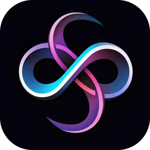
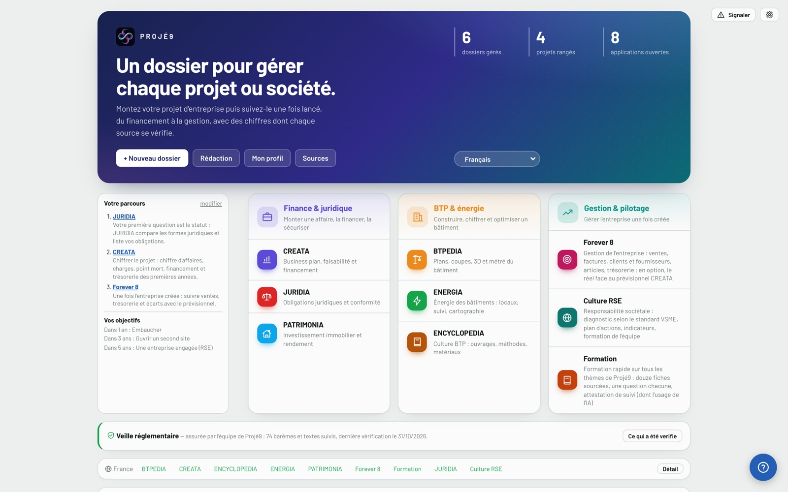

Un parcours, pas une suite d'outils
Projé9 aide les entreprises de Guyane, des Antilles et de France à monter leur projet puis à le suivre une fois lancé. Un dossier pour gérer chaque projet ou société : chaque application le complète et rien n'est saisi deux fois.
Couplez Projé9 à une IA, pour aller plus vite dans le suivi
Projé9 se couple à une IA pour lire vos dossiers et les remplir avec vous. Votre IA travaille dans vos dossiers, et vous gardez la main : chaque valeur porte sa source, et rien ne se supprime.
Avec Claude, dès aujourd'hui
Avec la formule Pro, Claude Desktop lit et remplit vos dossiers par le connecteur : synthèse, prévisions, suivi, devis en brouillon. Vous l'autorisez depuis Projé9.
Anonymisé par défaut
Ce que Claude lit est anonymisé : noms, adresses, courriels, téléphones et numéros d'identification sont remplacés par des repères (« Personne A », « Entreprise B »). Les chiffres restent. Vous pouvez décocher la case dans Projé9.
Votre IA personnelle, à venir
Une IA que vous hébergez ou que votre entreprise met à disposition pourra aussi se coupler à Projé9. Nous le ferons savoir quand ce sera prêt.
Une application par métier, une même exigence
Chaque outil calcule avec vous et montre son calcul.
CREATA
Business plan, financement, trésorerie mois par mois et score de faisabilité.
JURIDIA
Les obligations juridiques que déclenche l'activité, chacune avec sa source et sa sanction.
PATRIMONIA
Rendement sur quatre étages, cash-flow et plus-value à la revente.
BTPEDIA
Dessinez l'ouvrage : plans par niveau, coupes, 3D et métré en découlent.
ENERGIA
La consommation des bâtiments, local par local, et ce qu'elle coûte.
Forever 8
Votre entreprise au quotidien : affaires, clients réguliers, trésorerie, factures et échéances. En option, le réel face au prévisionnel de CREATA.
Encyclopédie
Les ouvrages et le mémento du bâtiment, à portée de main.
Culture RSE
La démarche RSE : diagnostic selon le standard VSME, plan d'actions, indicateurs et formation de l'équipe. Formule Pro.
Formation
Douze fiches sourcées sur les thèmes de Projé9, une question chacune et l'attestation de suivi. Formule Pro.
L'onglet Rédaction
Compte rendu, lettre de mission, courrier, note de synthèse : chaque dossier dispose de ses documents Word et Excel, préremplis à partir du dossier. Ils s'ouvrent dans Word ou dans ONLYOFFICE Desktop, logiciel gratuit à installer séparément. Projé9 intègre aussi un mémo et une feuille de calcul, avec des formules simples comme =SOMME(A1:A5). Tout reste sur votre ordinateur, dans la sauvegarde quotidienne et dans l'export du dossier.
ONLYOFFICE est une marque d'Ascensio System SIA. Projé9 n'est pas affilié à ONLYOFFICE.
Le diagnostic d'entrée
Parcours, compétences, freins et ressources : tout commence par la personne qui dirige l'entreprise.
Faisabilité et financement
Business plan et finance : chaque chiffre montre sa source et sa suite, jusqu'au score.
Ce qui s'impose
Les obligations, dans l'ordre où les traiter.
Les locaux
Le bâti (BTP) puis l'énergie, lorsque le projet comporte des locaux. En bonus, PATRIMONIA chiffre le patrimoine : l'achat d'un local ou un investissement locatif.
Une fois l'activité lancée
L'entrepreneur gère et suit son entreprise : trésorerie, affaires, factures, échéances.
L'équipe et la démarche
La démarche RSE et la formation de l'équipe sur les thèmes de Projé9. Avec la formule Pro.
Ce que vous ne savez peut-être pas
Six choses que Projé9 fait déjà, et dont on parle trop peu.
La facture lue sur photo
Dans Forever 8, prenez une facture en photo : son texte est lu sur votre ordinateur, sans envoi en ligne, et les champs se pré-remplissent. Vous vérifiez avant d'enregistrer ; si la lecture échoue, la facture se saisit à la main. La photo reste jointe et un duplicata PDF peut être produit.
Le même dossier, d'une application à l'autre
Un dossier suit le parcours CREATA, JURIDIA, BTPEDIA, ENERGIA puis Forever 8. La carte « Et maintenant ? » ouvre la suivante de vos applications sur le même dossier, et chacune reprend les chiffres clés des précédentes.
À plusieurs, chacun sous son nom
Avec la formule Structures, plusieurs conseillers travaillent dans les mêmes dossiers. On change de conseiller en un clic, et chaque dossier garde qui l'a ouvert et qui y a contribué. Un conseiller par poste payé.
Une sauvegarde chiffrée, chaque jour
Projé9 fait seul une sauvegarde chaque jour où vous l'ouvrez et garde les dix dernières. Elles sont chiffrées, avec une clé de récupération à noter. Une sauvegarde peut aussi être déposée où vous voulez, le Bureau ou une clé USB, pour la mettre à l'abri ailleurs.
CREATA hors de France
Outre la France, CREATA calcule avec les règles de l'Espagne, de l'Italie, du Brésil, des États-Unis (règles fédérales) et de la Chine, chaque barème avec sa source officielle. Les limites sont écrites à l'écran, et les résultats sont à faire valider par un professionnel du pays.
Une entreprise qui existe déjà
Saisissez, ou importez depuis votre comptabilité (FEC), les chiffres réels de vos derniers exercices, jusqu'à trois : CREATA en tire un diagnostic, puis des pistes d'amélioration avec leur effet avant et après sur trois ans.
En savoir plusDans votre langue, pour plusieurs pays
La langue et le pays se choisissent une seule fois sur l'accueil de Projé9. Chaque application les reprend. Pour tester un projet ailleurs, il suffit de changer de pays : les règles de ce pays s'appliquent.
Les limites sont indiquées dans l'application : États-Unis, règles fédérales seulement ; Chine, cotisations au barème de Shanghai ; Espagne, hors Pays basque, Navarre et Canaries ; Italie, hors additionnels régionaux et communaux ; Brésil, hors ICMS et ISS en dehors du Simples Nacional.
Des barèmes tenus à jour
72 barèmes et textes officiels sont suivis dans les applications, chacun relié à sa source (service-public.fr, Légifrance, URSSAF, INSEE, ADEME…) et daté de sa dernière vérification. L'application affiche cette date : un chiffre ancien ne passe pas inaperçu.
Une valeur qui change n'est jamais corrigée automatiquement : elle est relue puis modifiée partout où elle sert. Une nouvelle version est alors publiée.
Trois exercices, un diagnostic, un plan
CREATA ne sert pas qu'à créer. Voyez sur un exemple chiffré ce qu'elle tire des comptes d'une entreprise en activité.
Projé9 ouvre la marche
D'autres applications suivront, avec la même exigence.
Projé9
Monter un projet d'entreprise puis le suivre : neuf applications reliées par un même dossier.

Les prochaines applications
La même exigence, appliquée à d'autres métiers. Écrivez-nous depuis la page Contact pour être informé de leur sortie.
Vous voulez en voir plus ?
Contactez-nous pour une présentation en visio ou sur place.